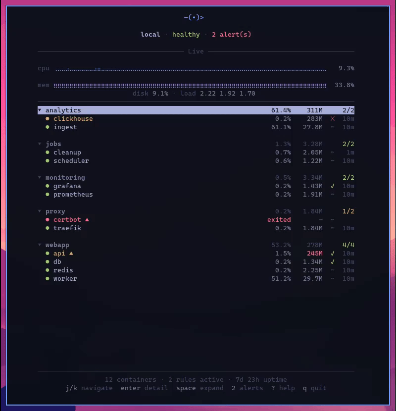

Lightweight Docker server monitoring
in your terminal
A single binary and an SSH connection. Host metrics, container stats, log tailing, and alerts — no infrastructure to deploy.

uses ANSI colors — inherits your terminal theme
Host metrics, containers, logs, and alerts
Built for people who SSH into their Linux servers and VPSs and just want to know what's going on. Unlike Prometheus or Grafana, there's no infrastructure to deploy, no services to maintain, no ports to expose.
Host Metrics
CPU, memory, disk, network, swap, and load averages with time history and sparkline graphs.
Container Monitoring
Status, resource usage, health checks, and restart tracking. Toggle tracking per container with a keypress.
Log Tailing
Stream container logs with regex search, log level filtering, match highlighting, and date/time ranges.
Alerting
Configurable rules for host metrics, container state, and log patterns. Email and webhook notifications.
Multi-Server
Monitor multiple hosts from one terminal. Concurrent connections, instant switching between servers.
Zero Attack Surface
No HTTP server, no API, no open ports. Unix socket behind SSH. Your monitoring surface is your SSH surface.
A single Go binary
that monitors over SSH
The agent runs on your server collecting metrics and evaluating alerts 24/7. The CLI connects through an SSH tunnel to a Unix socket — no open ports, nothing else to set up.
Single binary
Agent and client in one static binary. No runtime, no containers needed. Install and go.
SSH native
All communication over SSH tunnels to a Unix socket. No HTTP server, no API keys, no TLS certs to manage.
SQLite storage
Metrics and logs stored locally with configurable retention. No external database.
Always-on alerting
Rules evaluated on the agent 24/7. Get notified via email or webhook even when the TUI isn't open.
Opt-in tracking
Nothing tracked by default. Press t to start collecting for any container or compose group.
Terminal native
ANSI colors that inherit your terminal theme. No Electron app, no browser tab.
Install and monitor in under a minute
Install the agent
Sets up the binary, systemd service, and default config.
Start it
Install the client
No root required. Linux, macOS, and Windows (WSL).
Add your server
Connect
Download the compose file
Includes sensible defaults and example alert rules.
Start the agent
Edit the TORI_CONFIG section to configure alerts and notifications.
Install the client
Add your server
Connect
Build the binary
Requires Go 1.25+.
Run the agent
Build the binary
Same build step — single binary for both agent and client.
Add your server
Connect
Open source server monitoring
for your terminal
Free and MIT licensed. A self-hosted, lightweight alternative to Prometheus and Datadog for people who want visibility without the overhead.